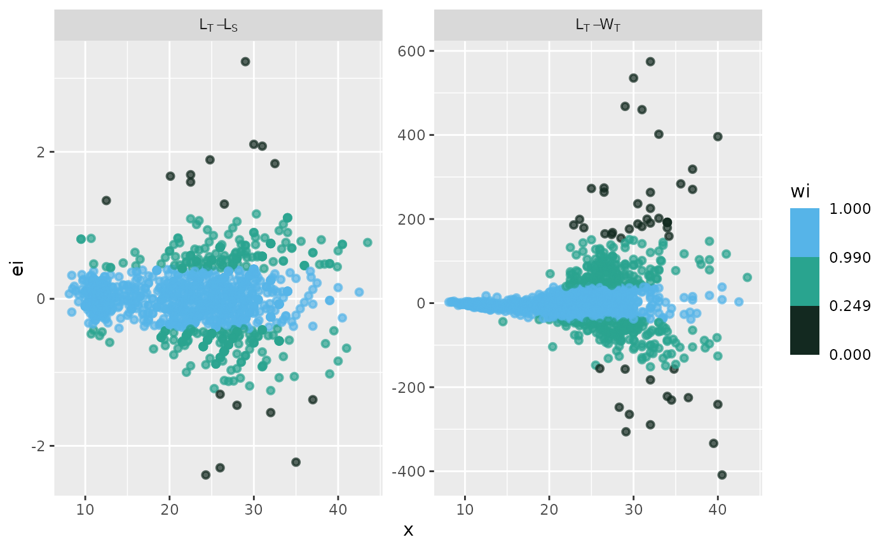
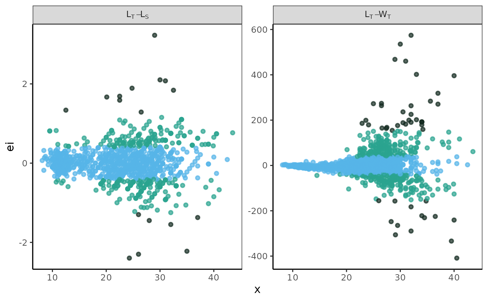
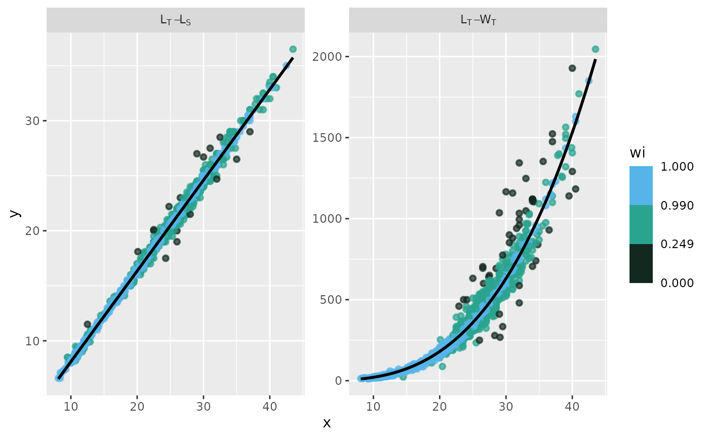
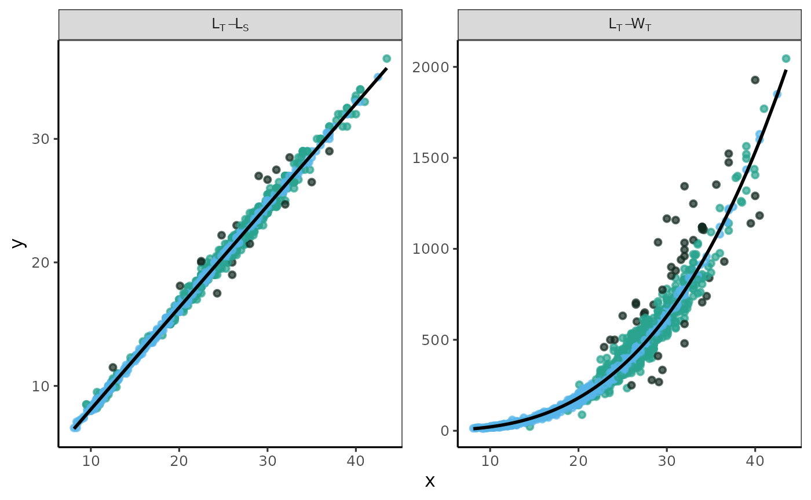
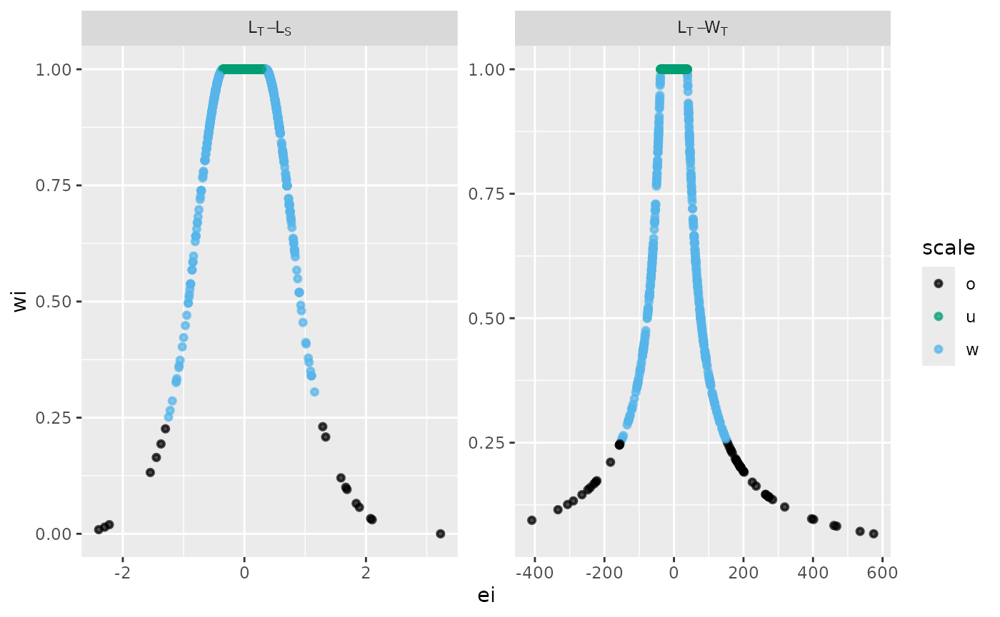
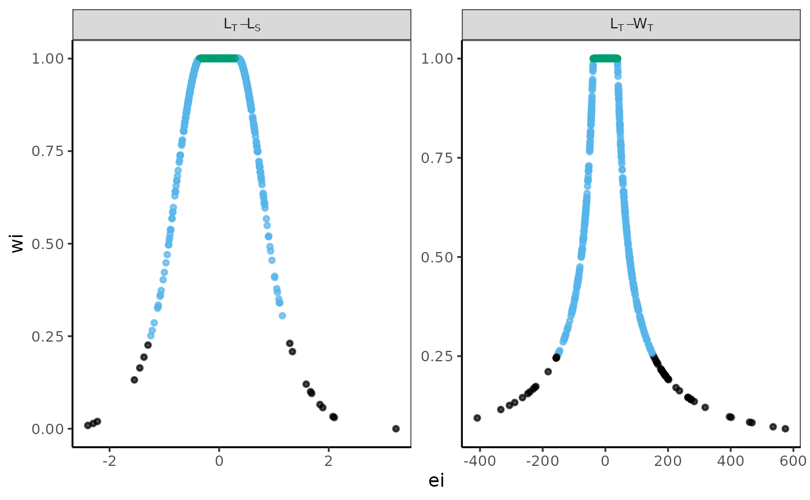

Morefi
Morphological Relationships Fitted by Robust Regression
09 July 2025
Morefi.RmdMorefi

Shield: 
Morefi © 2024 by Hugo Aguirre Villaseñor is licensed under a Creative Commons Attribution 4.0 International License.

This is a methodological package developed in R for analyzing the submitted article:
Aguirre-Villaseñor, H., Morales-Bojórquez, E., Cisneros-Mata (FISH13711). Biometric relationships as a fisheries management tool: A case study of the bullseye puffer (Sphoeroides annulatus. Tetraodontidae). Fisheries Research.
In fisheries monitoring, body length is the most commonly measured parameter because it is quick and easy to obtain. In contrast, measuring weight requires a level and stable scale, which can be difficult to secure in field sampling. Biometric relationships are crucial in fisheries biology. When accurately calculated, these relationships can be very useful for management purposes, especially for estimating an organism’s total length or weight based on other body measurements.
Many species are marketed through artisanal fishing in various commercial forms. However, there are currently no biometric relationships that allow for predicting live weight (the total weight of the fish) from the different categories of landed weight, such as fillet weight, gutted weight, or frozen weight.
The objective of this package is to provide quantitative analysis for various morphological relationships that help predict: a) the expected live weight of different landed weight categories, b) the expected fillet yield from various commercial presentations, and c) testing the suitability of fillet yield as a reference point in managing the target species.
For this purpose, some functions and a vignette were created to explain the process step by step. Its implementation streamlines the methodology and enhances the clarity and impact of both the results and graphical presentations (tables and figures are personalized).
The functions included in the Morefi package enable the evaluation of length-length, weight-weight and length-weight biometric relationships using data that exhibit high variability and do not meet the assumptions necessary for adjustment via least squares. Given this variability, a robust regression method is employed for analysis. The “robustbase” package (version 0.99-2) was utilized to fit robust regression models, using the functions lmrob() for linear and nlrob() for non-linear regression (Maechler et al., 2024).
Installation
You can install the development version of Morefi from GitHub using one of the following options:
Using the pak package
# install.packages("pak")
pak::pak("Macrurido/Morefi")or using the devtools package
Data available in the package
To showcase the functionality of the Morefi package, the two data sets from Aguirre-Villaseñor et al. (Submitted) are included.
Bullseye puffer measures
To demonstrate how the package functions, we utilize the dataset
botete, containing 1,397 fish across 7 variables: the total
length(LT), standard length (SL), body trunk length (LB), total weight
(WT), body trunk weight (WB), and fillet weight (Wfi) of the bullseye
puffer (Sphoeroides annulatus), collected from the Eastern
Central Pacific. In this dataset, the landing category is included in
the “Fleet” variable, which is categorized as follows: 1 indicates
Fresh, while 2 denotes Frozen-thawed.
To access the data file, the data frame is stored in an object, such as ‘mydata’.
mydata <- Morefi::Botete
str(mydata)
#> 'data.frame': 1397 obs. of 7 variables:
#> $ LT : num 21 22 12 21 12 28.4 29.3 34.8 31.7 31.5 ...
#> $ LS : num 17.3 17.6 10 17.3 10 23 24.2 27.5 25.5 26 ...
#> $ LB : num 17 15 10 15 8.5 20 20.5 27 23 24 ...
#> $ WT : num 189.1 213.4 33.4 236.7 36 ...
#> $ WB : num 115.6 86.7 15.4 100.4 18.9 ...
#> $ Wfi : num 50.7 55.5 6.9 65 9.1 ...
#> $ Fleet: Factor w/ 2 levels "1","2": 2 2 2 1 2 1 2 1 1 1 ...Bullseye puffer fish landings
A second dataset Botete_land, provided the Mexican
fishing records of bullseye puffer landed on the Pacific coast in 2023
and their live weight corresponding live weight for each weight category
(kg): total (WT), body trunk (WB) or fillet (Wfi), either Fresh or
Frozen-thawed (SIPESCA, 2024).
To access the data file, the data frame is stored in
catch.
catch <- Morefi::Botete_land
catch
#> Category Landed Biomass Pesos Pesos_kg
#> 1 WT_Fresh 509354 509354.0 33079.5 41.49873
#> 2 WB_Fresh 449646 494610.6 58048.0 52.05232
#> 3 WB_Fresh_Thawed 361404 451755.0 37997.0 54.77369
#> 4 Wfi_Fresh 47990 95980.0 16485.0 112.83715
#> 5 Total 1368394 1551699.6 145609.5 50.97446theme_papers()
The theme_papers() is created to standardize the graphic
format, used as base theme_bw(). To showcase their design,
this manual presents graphics in both their original format and the
format created using the theme_papers().
To call the theme_papers() function use the following
statement:
theme_papers <- Morefi::theme_papers()Lists and tables to organize and store results
Lists to store summaries
Lists must be created to store the relevant summaries. To organize the regression results, a nested list structure is used. This design allows for a hierarchical or multi-level data organization. At the first level, models are categorized, while the second level categorizes the datasets into Fresh, Frozen-thawed (Frozen), and Total sample (Total). Finally, at the third level, sub-lists contain the results from the various fitted models.
# First hierarchical level: Models
X_list <- vector(mode='list', length=2)
X_names <- c("LT_LS", "LT_WT")
names(X_list) <- X_names
# Second hierarchical level: Category
Fresh <- X_list
Frozen <- X_list
Total <- X_list
# Third hierarchical level:
List_fit <- list(Fresh,Frozen,Total) # Fitting results
List_ICmodels <- List_fit # Confidence interval of the models. List to store Coincident Curves Test Tables.
To store the results of each model regressions, an empty matrix of 4
rows and 8 columns are created. The table CCT stores the
values and calculus for the Coincident Curves Test between weight
categories: Fresh, Frozen,
Total and Joined (sum of values of
Fresh, Frozen): the residual sum of
squares RSS, degree of freedom DF,
Analysis of the Residual Sum of Squares ARSS,
F-table, p-value and decision criteria
for
=
0.05 Criteria.
To store the results of each fitted model, a list called
List_TCCT was created. Each item in the list contains the
customized table CCT, which is initially filled with
NA values.
#CCT <- (matrix(NA,nrow=4,ncol=8))
#CCT[,2] <- c("Fresh","Frozen","Total","Joined")
#colnames(CCT) <- c("Model","Data","RSS","DF","ARSS","F-table",
# "p-value","Criteria")
# Create model list including empty T1 table
#List_TCCT <- setNames(lapply(1:length(modelos), function(x)
#CCT),names(modelos))
#CCTList to store summary regression tables.
To store the summary regression, a customised table T1
is generated. The type of function model (Linear or
Potential), and its variables, are indicated in the
first two columns. The third column indicates the data source used
(Fresh, Fresh-Thawed, or
Total). By row it is stored: the
Intercept, its confidence interval
(CI95%); the Slope; its
(CI95%); the adjusted robust coefficient of
determination R2,adj,w,a and the degrees of freedom
DF.
# An empty table to store the summary regression results
T1 <- data.frame(matrix(NA, nrow = 3, ncol = 9))
names(T1) <- c("Function", "Model","Categories",
"Intercept", "CI95%","Slope",
"CI95%", "R2","DF")
# Create model list including empty T1 table
#List_Tables <- setNames(lapply(1:length(modelos), function(x)
#T1),names(modelos))
#T1xseq
A list called “x_seq” was created to store the sequences of independent variables used in various models, including Total Length, Standard Length, Total Weight, and Body Trunk Weight. For each model, the minimum and maximum values, as well as the bin range for each sequence, have been established.
Fitting modeles
Using the biometric data from Morefi::botete, a linear
relationship between Total Length and Standard Length (LT_LS) was
established using the robustbase::lmrob function.
Additionally, the relationship between Total Length and Total Weight
(LT_WT) was fitted using the robustbase::nlm function, with
an input value of a = 0.1 and a slope of b = 3.
Both relationships are fitted for the landed categories: Fresh, Frozen-thawed (Frozen), Total (All samples).
In the for loop, the jth landed categories is selected: 1 for Fresh, 2 for Frozen-thawed, 3 for the total sample.
#for (j in 1:3) {
# if (j <3) {
# tmp <- mydata[mydata$Fleet == j,]
# df <- dplyr::tibble(x1 = tmp[,1],y1 = tmp[,2])
# Fitting model
# eq <- robustbase::lmrob(y1 ~ x1, data= df,
# setting = "KS2014",
# doCov = TRUE)
# Storing values
# Estimate confidence interval function
# List_ICmodels[[j]][[1]] <- Morefi::fn_intervals(eq,xseq)
# List_fit [[j]][[1]] <- fn_dfa(eq= eq)
# }else{
# tmp <- mydata
# } # End if
# df <- dplyr::tibble(x1 = tmp[,1],
# y1 = tmp[,2])
#eq1 <- robustbase::lmrob(y1 ~ x1, data= df,
# setting = "KS2014",
# doCov = TRUE)
# Power Model
#df <- dplyr::tibble(x1 = tmp[,1],
# y1 = tmp[,4])
#a=0.01
#b=3
#eq2 <- robustbase::nlrob(y1 ~ a*x1^b, data= df,
# start = list(a= a, b= b),
# trace = FALSE)
# In the for loop, the ith model is selected.
# Linnear equation
# eq <- robustbase::lmrob(y1 ~ x1, data= datos,
# setting = "KS2014",
# doCov = TRUE)
# R squared
# R2 <- summary(eq)$r.squared
#Non parametric IC 95 for parameters
# betas_IC95 <- confint(eq, level = 0.95)
# }
The Total length (LT) - Total weight (WT) was estimated for the bullseye puffer Sphoeroides annulatus for landed categories: Fresh, Frozen-thawed (Frozen), Total (All sample) and Joined (sum of values of Fresh and Frozen). The Residual Sum of Squares (RSS) and the degrees of freedom (DF) are provided for each data source.
Morefi functions
The Morefi package includes functions that facilitate data analysis and ensure reproducibility of results.
fn_ARSS()
The function fn_ARSS() perform the Coincident Curves
Test, to determine if there are significant differences between the
fitted curves for each database. It is based on the Analysis of the
Residual Sum of Squares (ARSS) (Chen et al. 1992).
of each regression fitted by pooled data, = sum of the of each regression fitted for each individual sample, = total sample size, and = number of samples in the comparison.
The residual sum of squares
and the degrees of freedom
for each fitted regression are previously stored in the
List_TCCT list. For each regression, the calculations are
stored in a data frame T1, which is stored iteratively
using a loop for in a list T.
Inside the function, the RSS and DF for the joined sample are calculated to perform the F test for two tails . The decision criteria is performed: “*” if or “NS” if the .
The function requires defining:
-
List_TCCT: A list with fitted regression results.
-
i: An integer value indicating the ith regression analyzed. -
alfa: A numerical value that defines the significance level. The default number is 0.05.
The function return a data frame containing the results of the Coincident Curves Test stored in a list.
Example
The Total length (LT) - Total weight (WT) was estimated for the bullseye puffer Sphoeroides annulatus for landed categories: Fresh, Frozen-thawed (Frozen), Total (All sample) and Joined (sum of values of Fresh and Frozen). The Residual Sum of Squares (RSS) and the degrees of freedom (DF) are provided for each data source. In the table the first row displays the Analysis of Residual Sum of Squares (ARSS), the p-value (p), and the decision criteria for the ARSS test (Criteria).
In the table the first row displays the Analysis of Residual Sum of Squares (ARSS), the p-value (p), and the decision criteria for the ARSS test (Criteria).
The adjusted models show the following data: Fresh SSR= and DF= 742;
Frozen SSR= 1280131.81 and DF= 651; and the total sample SSR= 6115874.53
and DF= 1395. Values are stored in the table Table_CC, this
is stored in a list, and the name of each item is built with the
acronyms of the model variables (e.g. LTWT).
Table_CC <- data.frame(matrix(NA,nrow=4,ncol=8))
Table_CC[1,1] <- "Lt-WT"
Table_CC[,2] <- c("Fresh","Frozen","Total","Joined")
colnames(Table_CC) <- c("Model","Category","RSS","DF","ARSS","F-table","p-value","Criteria")
Table_CC[1,3] <- 4424418.33
Table_CC[1,4] <- 742
Table_CC[2,3] <- 1280131.81
Table_CC[2,4] <- 651
Table_CC[3,3] <- 6115874.53
Table_CC[3,4] <- 1395
List_ARSS <- list(LTWT=Table_CC)
i <- 1
ARSS <- fn_ARSS(List_ARSS, i, alfa= 0.05)| Model | Category | RSS | DF | ARSS | F-table | p-value | Criteria |
|---|---|---|---|---|---|---|---|
| LT vs. WT | Fresh | 4424418 | 742 | 0.0721 | 1.0921 | 0.05007 | NS |
| NA | Frozen | 1280132 | 651 | NA | NA | NA | NA |
| NA | Total | 6115875 | 1395 | NA | NA | NA | NA |
| NA | Joined | 5704550 | 1393 | NA | NA | NA | NA |
fn_dfa()
This function uses the augment() function from the
broom package to extract the observed values of the
independent variable (x) and dependent variable (y), along with the
weights (wi), fitted values (fitt), and residuals (ei) from the summary
of the fitted model. It then turns these components into tidy
tibbles.
The function augment() does not provide the weights
column for the lmrob() function. The function
fn_dfa() contains a conditional statement that includes
this variable in the output data frame of the linear adjustments.
In order to homogenizes the results, the columns names were renamed as “y”, “wi”,“x”,“fitt”,and “ei”.
An additional column has been included that codes errors using a
scale based on weighted values: unweighted (u), weighted (w), and
outliers (o)
dfa$scale <- ifelse(df$wi < 0.25, "o", ifelse(df$wi<1, "w", "u")).
The function requires defining:
-
eq: Summary of the equation fitted.
Example
Using the biometric data from Morefi::botete, a linear
relationship between Total Length and Standard Length (LT_LS) was
established using the robustbase::lmrob function.
Additionally, the relationship between Total Length and Total Weight
(LT_WT) was fitted using the robustbase::nlm function, with
an input y-value of a = 0.1 and a slope of b = 3.
For optimal functionality of fn_dfa(), the data frames
used for fitting relationships must be formatted as tibble.
library(dplyr)
library(tibble)
df <- dplyr::tibble(x1 = mydata[,1],
y1 = mydata[,2])
eq1 <- robustbase::lmrob(y1 ~ x1, data= df,
setting = "KS2014",
doCov = TRUE)
dfa1 <- fn_dfa(eq= eq1)
# Power Model
df <- dplyr::tibble(x1 = mydata[,1],
y1 = mydata[,4])
a=0.01
b=3
eq2 <- robustbase::nlrob(y1 ~ a*x1^b, data= df,
start = list(a= a, b= b),
trace = FALSE)
dfa2 <- fn_dfa(eq= eq2)| y | x | fitt | ei | wi | scale |
|---|---|---|---|---|---|
| 17.3 | 21.0 | 17.174230 | 0.1257696 | 1.0000000 | u |
| 17.6 | 22.0 | 17.999109 | -0.3991088 | 0.9914912 | w |
| 10.0 | 12.0 | 9.750324 | 0.2496758 | 1.0000000 | u |
| 17.3 | 21.0 | 17.174230 | 0.1257696 | 1.0000000 | u |
| 10.0 | 12.0 | 9.750324 | 0.2496758 | 1.0000000 | u |
| 23.0 | 28.4 | 23.278331 | -0.2783310 | 1.0000000 | u |
| y | wi | x | fitt | ei | scale |
|---|---|---|---|---|---|
| 189.1 | 1.0000000 | 21.0 | 209.81549 | -20.715491 | u |
| 213.4 | 1.0000000 | 22.0 | 242.19890 | -28.798897 | u |
| 33.4 | 1.0000000 | 12.0 | 37.32321 | -3.923211 | u |
| 236.7 | 1.0000000 | 21.0 | 209.81549 | 26.884508 | u |
| 36.0 | 1.0000000 | 12.0 | 37.32321 | -1.323211 | u |
| 457.0 | 0.5098231 | 28.4 | 532.50610 | -75.506104 | w |
fn_fig_e()
The function creates a graph that displays residuals on the vertical axis and either the independent variable or predicted values on the horizontal axis, as determined by the researcher. The residuals are color-coded using a weighted scale.
The function returns a customized multi-panel residual plot that uses a color scale for the residual points.
Since the parameters contain subscripts, the labels were customized
using the ggplot2::as_labeller() function and are stored in
my_labeller.
The function requires defining:
-
dfA data frame contains the following variables: independent (x) and dependent (y) variables, the fitted variable (fitt), a weighted variable (wi), and additional details including the weights (wi), fitted values (fitt), residuals (ei), and the scale. -
opacityA numeric value for the alpha aesthetic used to control the transparency of elements in a plot. -
tintA vector that specifies the palette colors used to color the points. -
scaleA numeric vector that defines the thresholds for coloring the points. -
orderA vector determines the sequence of the plots. -
my_labellerTransforms objects to labeller functions. Used internally by labeller().
Example
A residual analysis of the model fitting has been conducted using combined data sets for the pufferfish Sphoeroides annulatus. The label in the grey box indicates the variables used for each model; the first variable listed is the independent variable, and the second is the dependent variable. The x-axis represents the values of the independent variable, while the y-axis displays the raw residuals (ei).
The observed data points were coloured based on a weighted scale : blue for unweighted , green for weighted , and black for outliers . Lengths in cm and weights in g.
The attributes associated with this function: df,
opacity, tint, wi_scale,
X_names, and my_labeller were defined in the
section titled Establishing Values for the Examples
Provided.
The objects dfa1, and dfa2 were derived
from the fn_dfa() example.
# Preparing the dataset.
library(dplyr)
tmp1 <- dfa1 # Data frame 1
tmp1['id'] = "LT_LS" # to add an ID column to a Data frame
tmp2 <- dfa2 # Data frame 2
tmp2['id'] = "LT_WT" # to add an ID column to a Data Frame
df <- rbind(tmp1, tmp2) # Joining data sets
# Establishing values for the examples provided
tint <- c("#000000", "#009E73", "#56B4E9")
opacity <- 0.7
# weighted value scale
wi_scale <- c(0.000, 0.249, 0.990, 1.000)
# To order facet wrap plots in ggplot2
X_names <- c("LT_LS", "LT_WT")
# The labels in the ggplot composite chart are customized to include subscripts.
library(ggplot2)
my_labeller <- as_labeller(c(LT_LS= "L[T]-L[S]",
LT_WT= "L[T]-W[T]"),
default = label_parsed)
# The plot
p <- fn_fig_e(df, opacity, tint, scale= wi_scale,
order= X_names, my_labeller)
p + theme_papers
fn_fig_fw()
fn_fig_fw(): The fitted values of the models for a
landed presentation category were displayed as a multi-panel plot. The
observed data points for each fitted relationship were categorized
according to a weighted color scale.
The function returns a customized multi-panel fitted values plot that uses a color scale for the residual points.
Since the parameters contain subscripts, the labels were customized
using the ggplot2::as_labeller() function and are stored in
my_labeller.
The function requires defining:
-
dfA data frame contains the following variables: independent (x) and dependent (y) variables, the fitted variable (fitt), a weighted variable (wi), and additional details including the weights (wi), fitted values (fitt), residuals (ei), and the scale. -
opacityA numeric value for the alpha aesthetic used to control the transparency of elements in a plot. -
tintA vector that specifies the palette colors used to color the points. -
scaleA numeric vector that defines the thresholds for coloring the points. -
orderA vector determines the sequence of the plots. -
my_labellerTransforms objects to labeller functions. Used internally by labeller().
Example
Using the biometric data from Morefi::botete, a linear
relationship between Total Length and Standard Length (LT_LS) was
established using the robustbase::lmrob function.
Additionally, the relationship between Total Length and Total Weight
(LT_WT) was fitted using the robustbase::nlm function, with
an input y-value of a = 0.1 and a slope of b = 3.
The label in the grey box indicates the variables used for each model; the first variable listed is the independent variable, and the second is the dependent variable. The x-axis represents the values of the independent variable, while the y-axis displays the raw residuals (ei).
The observed data points were coloured based on a weighted scale : blue for unweighted , green for weighted , and black for outliers . Lengths in cm and weights in g.
The attributes associated with this function: df,
opacity, tint, wi_scale,
X_names, and my_labeller were defined in the
section titled Establishing Values for the Examples
Provided.
The objects dfa1, and dfa2 were derived
from the fn_dfa() example.
# Preparing the dataset.
library(dplyr)
# The data
tmp1 <- dfa1 # Data frame 1
tmp1['id'] = "LT_LS" # to add an ID column to a Data frame
tmp2 <- dfa2 # Data frame 2
tmp2['id'] = "LT_WT" # to add an ID column to a Data Frame
df <- rbind(tmp1, tmp2) # Joining data sets
# Establishing values for the examples provided
tint <- c("#000000", "#009E73", "#56B4E9")
opacity <- 0.7
# weighted value scale
wi_scale <- c(0.000, 0.249, 0.990, 1.000)
# To order facet wrap plots in ggplot2
X_names <- c("LT_LS", "LT_WT")
# The labels in the ggplot composite chart are customized to include subscripts.
library(ggplot2)
my_labeller <- as_labeller(c(LT_LS= "L[T]-L[S]",
LT_WT= "L[T]-W[T]"),
default = label_parsed)
# The plot
p <- fn_fig_fw(df, opacity, tint, scale= wi_scale, order= X_names, my_labeller)
p + theme_papers
fn_fig_w()
fn_fig_w(): The residual structure was analyzed by
graphing
residuals against weighted values. A custom multi-panel plot illustrates
the structure of each fitted relationship, categorized by a
color-weighted scale of values.
Since the parameters contain subscripts, the labels were customized
using the ggplot2::as_labeller() function and are stored in
my_labeller.
The function requires defining:
-
dfA data frame contains the following variables: independent (x) and dependent (y) variables, the fitted variable (fitt), a weighted variable (wi), and additional details including the weights (wi), fitted values (fitt), residuals (ei), and the scale. -
opacityA numeric value for the alpha aesthetic used to control the transparency of elements in a plot. -
tintA vector that specifies the palette colors used to color the points. -
scaleA numeric vector that defines the thresholds for coloring the points. -
orderA vector determines the sequence of the plots. -
my_labellerTransforms objects to labeller functions. Used internally by labeller().
Example
The Residual Structures classified by a Weighted Scale was analyzed using combined data sets for the pufferfish Sphoeroides annulatus. The label in the grey box indicates the variables used for each model; the raw residuals are shown on the x-axis, and the weighted residuals (wi) are displayed on the y-axis.
The observed data points were coloured based on a weighted scale : blue for unweighted , green for weighted , and black for outliers . Lengths in cm and weights in g.
The attributes associated with this function: df,
opacity, tint, wi_scale,
X_names, and my_labeller were previously
defined in the section titled Establishing Values for the
Examples Provided.
The objects dfa1, and dfa2 were derived
from the fn_dfa() example.
# Preparing the dataset.
library(dplyr)
# The data
tmp1 <- dfa1 # Data frame 1
tmp1['id'] = "LT_LS" # to add an ID column to a Data frame
tmp2 <- dfa2 # Data frame 2
tmp2['id'] = "LT_WT" # to add an ID column to a Data Frame
df <- rbind(tmp1, tmp2) # Joining data sets
# Establishing values for the examples provided
tint <- c("#000000", "#009E73", "#56B4E9")
opacity <- 0.7
# weighted value scale
wi_scale <- c(0.000, 0.249, 0.990, 1.000)
# To order facet wrap plots in ggplot2
X_names <- c("LT_LS", "LT_WT")
# The labels in the ggplot composite chart are customized to include subscripts.
library(ggplot2)
my_labeller <- as_labeller(c(LT_LS= "L[T]-L[S]",
LT_WT= "L[T]-W[T]"),
default = label_parsed)
# The plot
p <- fn_fig_w(df, opacity,tint, my_labeller,order= X_names) 
p + theme_papers
fn_freq()
It is used as an internal function within
fn_freqw().
The fn_freq() function calculates a frequency
distribution of data using the cut() and
table() functions from the R base. It produces a data frame
that displays frequencies categorized by class interval.
Within the function, the non-cumulative absolute frequency is
calculated for each user-defined class interval based on the
breaks object. The breaks object must be
defined outside the function by the user.
The attributes and examples of fn_freq() are detailed in
the documentation for the fn_freqw() function below.
fn_freqw()
fn_freqw() calculate the percentage frequencies of
weights by model adjusted using the robust regression approach. The
function calculates the relative frequency distribution using the
function fn_freq() from Morefi package. It
returns a table with frequencies by class interval.
The breaks object must be defined. To incorporate the number of non-weighted values , a class interval “1” is added to the sequence inside the function.
The function requires defining:
-
dfA vector of data values. -
breaksA vector with class intervals. -
rightLogical, indicating if the intervals should be closed on the right (and open on the left) or vice versa.
See also Morefi::fn_freq;
cut() and table() from the R base package.
Example
The weighted values were obtained from the summary of linear and
power models fitted using robust regression and stored in
dfa1 and dfa2, which were generated with the
fn_dfa() example. In each data frame, the weighted values
are stored in the column labeled “wi.”
The function fn_freqw() calculates the frequency of
weighted values within a defined interval based on a weighted scale
classification: unweighted
,
weighted
,
and outliers
.
The weighted scale is stored in breaks.
breaks <- c(0,0.25,1,Inf) # Weighted scale
df <- dfa1$wi # Data frame 1
freq1 <- fn_freqw(df, breaks, right=FALSE)
df <- dfa2$wi # Data frame 2
freq2 <- fn_freqw(df, breaks, right=FALSE)
# Merging the two data sets (as example)
freqw <- cbind(freq1, freq2)| freq1 | freq2 | |
|---|---|---|
| [0,0.25) | 1.216893 | 3.364352 |
| [0.25,1) | 30.064424 | 27.057981 |
| [1,Inf) | 68.718683 | 69.577666 |
fn_fyield()
fn_fyield(): Calculates the fillet yield by dividing a
defined weight reference point bm by the mean, lower,
and upper confidence interval of 95% (IC95%) of the estimated fillet
weight, respectively.
fn_intervals()
fn_intervals(): Calculates a non-parametric confidence
and predicted intervals using the function predFit() from the package
investr (version 1.4.2).
fn_R2RV()
fn_R2RV(): Calculates a robust version of the
coefficient of determination
(Renaud & Victoria-Feser, 2010).
fn_summary()
fn_summary(): Customizes and stores the summary of each
fitted regression.
fn_Wlive()
fn_Wlive(): The live weight, which is the total weight
of an organism, is estimated based on the weights of different landing
categories, such as eviscerated weight and fillet weight. These
estimates are derived using regression parameters that relate total
weight to the weight of each landing category.
fn_xseq()
fn_xseq(): Generates a data frame with a sequence for
independent variables (including minimum and maximum values) and selects
it according to the model.
Example
To demonstrate how the package works, please follow the step-by-step
process outlined in the Example-Analysis vignette, which
reconstructs the results presented in the article by Aguirre-Villaseñor
et al. (FISH13711).
References
Aguirre-Villaseñor, H., Morales-Bojórquez, E., Cisneros-Mata (FISH13711). Biometric relationships as a fisheries management tool: A case study of the bullseye puffer (Sphoeroides annulatus. Tetraodontidae). Fisheries Research.
Chen, Y., Jackson, D. A., Harvey, H. H. 1992. A comparison of von Bertalanffy and polynomial functions in modelling fish growth data. Canadian Journal of Fisheries and Aquatic Sciences 49(6): 1228–1235. https://doi.org/10.1139/f92-13
Maechler M, Rousseeuw P, Croux C, Todorov V, Ruckstuhl A, Salibian-Barrera M, Verbeke T, Koller M, Conceicao EL, Anna di Palma M (2024). robustbase: Basic Robust Statistics. R package version 0.99-4-1, http://robustbase.r-forge.r-project.org/.
Renaud, O., Victoria-Feser, M. P. (2010). A robust coefficient of determination for regression. Journal of Statistical Planning and Inference. 140(7), 1852-1862. doi: 10.1016/j.jspi.2010.01.008.
SIPESCA. 2024. Sistema de Información de Pesca y Acuacultura – SIPESCA. Comisión Nacional de Pesca y Acuacultura. https://sipesca.conapesca.gob.mx (accessed 7 February 2024).